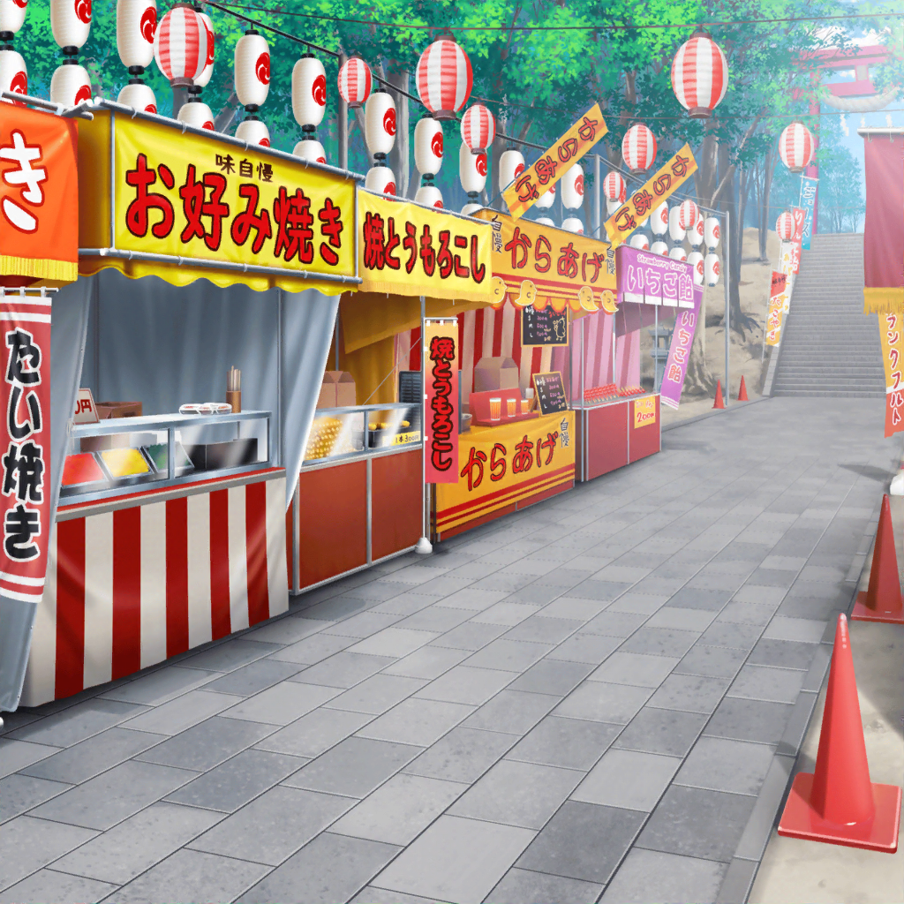

神社 参道
香澄
ん～！
このわたあめ、すっごく美味しいよー！
香澄
あ、美咲ちゃんの食べてるたこ焼きも
すっごく美味しそう！
美咲
……よかったら、ひとつ食べる？
香澄
いいの！？
ありがと～！！
美咲
戸山さん……さっき焼きそばも食べてたのに、
よくそんなに食べられるね
香澄
え～？
だって、せっかくのお祭りなんだから楽しまなくちゃ！
こころ
あたしもそう思うわ！
もっともーっとお祭りを楽しみましょう！
香澄
よーし、次はどこの屋台に行こうか？
美咲
あたしは別にどこでもいいから。
２人に任せるよ
こころ
それなら、もう一度あそこに行きましょう！
あたし、あれがとっても楽しかったの！
金魚さんの……
香澄
あ、金魚すくい！？
いいねー！ いこいこー！
美咲
こころ……くれぐれも言っておくけど、
金魚を救うんじゃないからね？
すくうんだからね？ ちゃんとわかってる？
こころ
もちろんよ！
次こそは、ちゃんとすくってみせるわ！
美咲
本当に、わかってるのかな……
香澄
とりゃー！！
あ、こころん！ 黒い出目金がそっちに行ったよ！
こころ
まかせて、香澄！
出目金さん！ あたしにすくわれにきたのね！
それーっ！！
香澄
あ～、破けちゃったね……
こころ
なかなか難しいのね！
やっぱりあっちの入れ物を使った方が楽だと思うわ！
美咲
だからダメなんだって！
巴
あれ？
みんな、何やってるんだ？
こころ
あら、巴じゃない！
今、金魚すくいをしているの！
巴
そうだったのか！
どうだ、調子は？
香澄
それが難しくって……
すぐ紙も破けちゃうし……
巴
それならアタシがコツを教えてやるよ！
香澄
ホントに！？
知りたい知りたい！ 巴ちゃん、教えてー！
巴
オーケー、任せとけ！
まずは、こんな感じでポイを持つだろ？
香澄
え？ これってポイって言うんだ？
そんなかわいい名前だったなんて知らなかった！
美咲
ほら、こころもよく聞いときなよ
こころ
巴！ あたしもポイを持ったわよ！
こんな感じでいいかしら？
巴
よし。
そうしたらポイを裏返して、紙が貼ってある面を上にするんだ
香澄
え？ これを……裏返すの？
巴
そう。
そっちの面を上にして金魚をすくう。
それがまずひとつ目のコツだな！
香澄
えぇ！？ だけど、こっちですくうと縁がないから、
すぐに金魚が落ちちゃいそうだけど……
巴
と、思うだろ？ だけど、縁のある面を上にして
金魚をすくうと、水まで一緒にすくっちゃうから、
その水の重みでポイが破れやすくなっちゃうんだよ
美咲
へぇー、なるほど……
言われてみれば、確かにそうかも……
縁がある分、水が逃げていかないってことか
巴
で、水の中でポイを動かす時は、
なるべく水平にゆっくり動かして、
紙に水の抵抗を与えないようにする
香澄
な、なるほど！
そんなこと考えたことなかった！
巴
そして金魚をすくう時は、ポイを斜めに動かして、
水を下に流しながらゆっくり上げる！
そうすると……ほら！
香澄
わ！ すごいよ、巴ちゃん！
２匹も一緒にすくえてるよっ！
巴
な？ 今言ったコツを覚えれば、
意外と簡単に金魚すくいができるぞ。
とりあえず、やってみな
香澄
うん！
ありがとうね、巴ちゃん！
こころん、一緒にやってみようっ！
こころ
そうね！
あたし、今のコツを聞いたら、
とってもたくさんすくえそうな気がしたわ！
美咲
……ていうか、和太鼓の時に
それくらいの説明してほしかったんだけど……
香澄
ねえ、見て見て！
私にも金魚すくえたよ！
こころ
あたしもできたわ！
巴の言った通りにやったら、とっても簡単だったわよ！
巴
お、２人とも飲み込みが早いな！
それじゃあ、アタシも本気出してやってみるか！
こころ
あ、香澄！
そっちに黒い出目金さんが行ったわよ！
香澄
よーし！ さっきはうまくできなかったけど、
今度は絶対すくっちゃうからね～っ！ 覚悟っ！